Titulo: Evolucionando Conocimientos
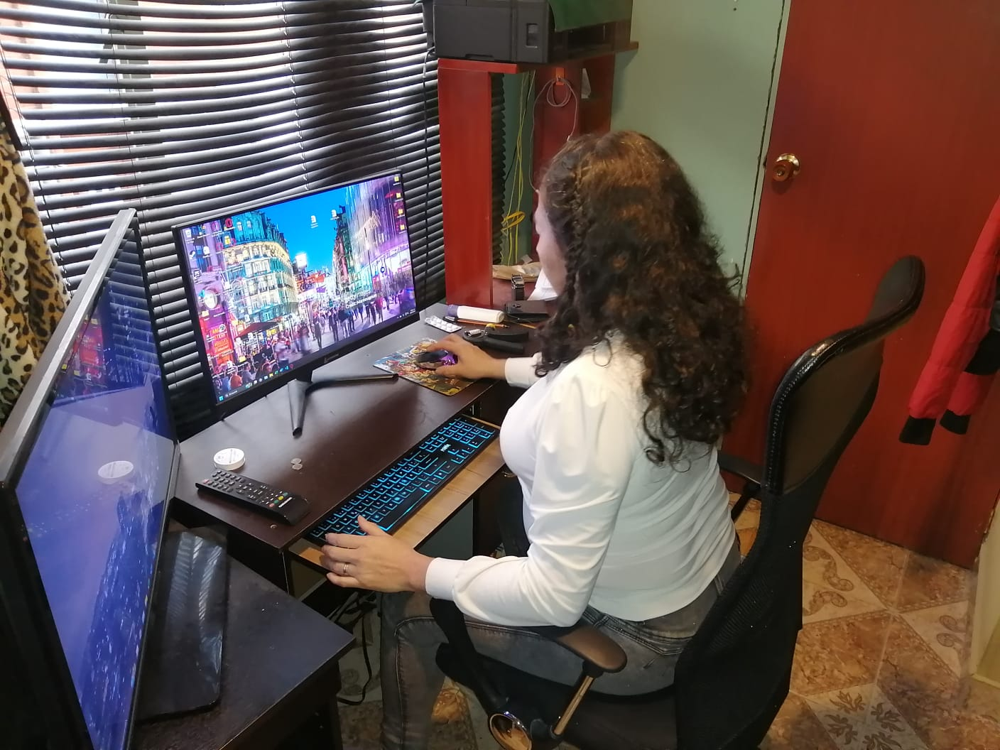
A continuacion se encuentran las evidencias de la practica
desarrollada el dia 06 de Agosto de 2025.
En la imagen anterior se encuentran la señora Yolanda vanegas; En la
imagen se encuentra brevemente revisando y repasando conocimiento
previos.
Evidencias
-
En esta parte los participantes se les esta dando una breve introduccion de lo que se les hiba a enseñar, ese dia la practica hiba a centrarse en la introduccion en el uso de herramientas como excel y word, ademas de una breve explicacion de como utilizar youtube para encontrar toda clase de videos, desde tutoriales, a videos de musica.
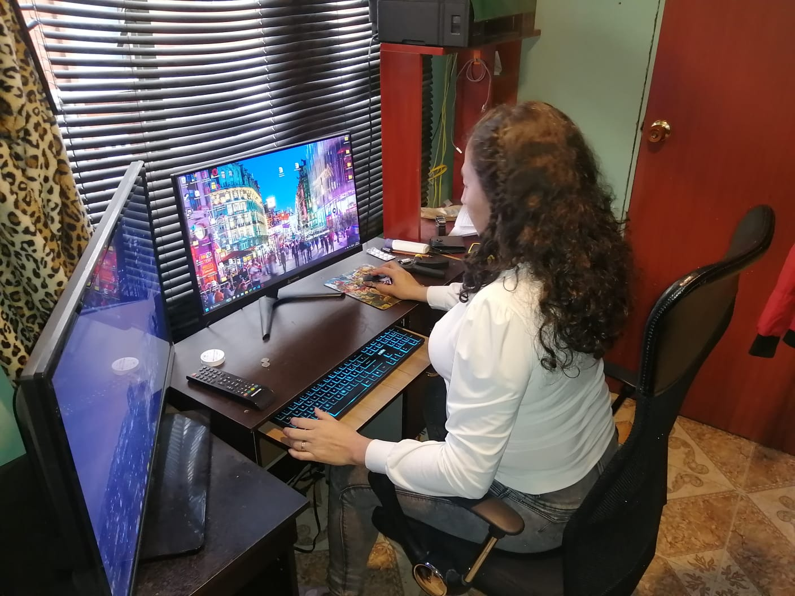 -
Antes de comenzar con el tema principal, me parecio una idea genial mostrarles una parte de la grabacion anterior, unas palabras de la profesroa hablando de los cambios e impactos que estamos haciendo en estas practicas y mostrandoles que ellos tambiene estan haciendo parte de este proceso.
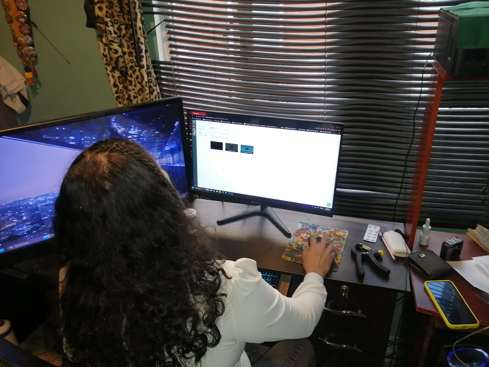 -
Aqui ya estabamos comenzando con la practica, aqui la señora Yolanda comenzo a cerrar las ventanas que no utilizamos y procede a abrir youtube y buscar un tutorial, en este caso uno que nos hablara de Word y Excel.
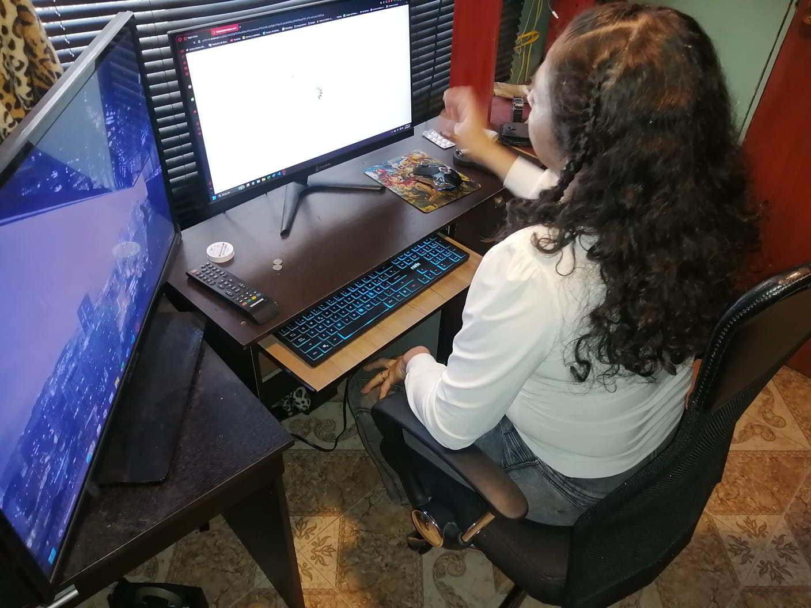 -
Despues de revisar el tutorial y antes de comenzar la practica en excel se hizo una breve busqueda en internet por parte del señor Jose, donde encontro una grabacion que habla de las buenas practicas a la hora de usar excel.
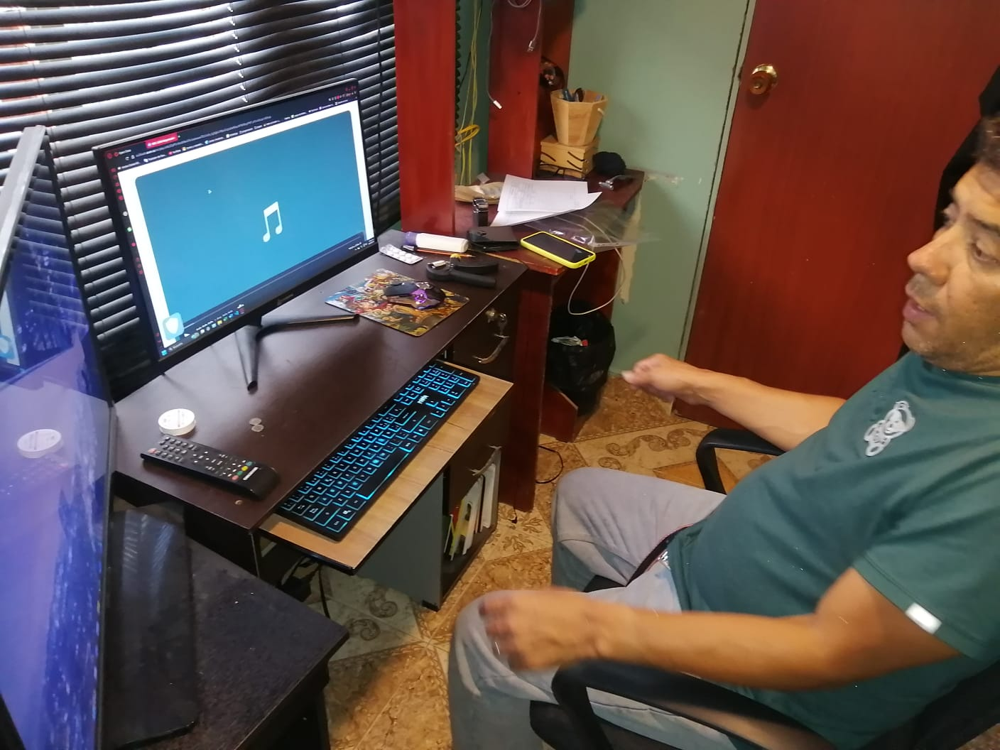 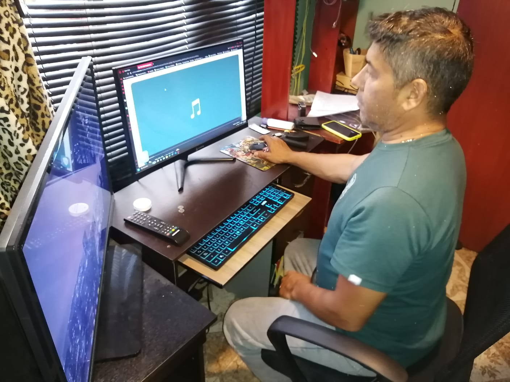
Reflexion personal
La forma y rapidez de como ellos han avanzado ha sido sorprendente. Antes no sabian ni como prender un computador, ahora ya estan buscando videos en Youtube y haciendo ejercisios en Word y aprendiendo a sumar en excel, no son cosas muy complejas pero me alegra saber que se esta generando un cambio en sus estilos de vida, ahora ellos ya son mas independientes en cuanto a la tecnologia, y ese era el objetivo que estaba buscando cumplir, me hace pensar que todo este proceso a valido la pena y me gustaria continuar ayudandoles y enseñandoles cada vez mas.
Titulo: Habilidades Independientes
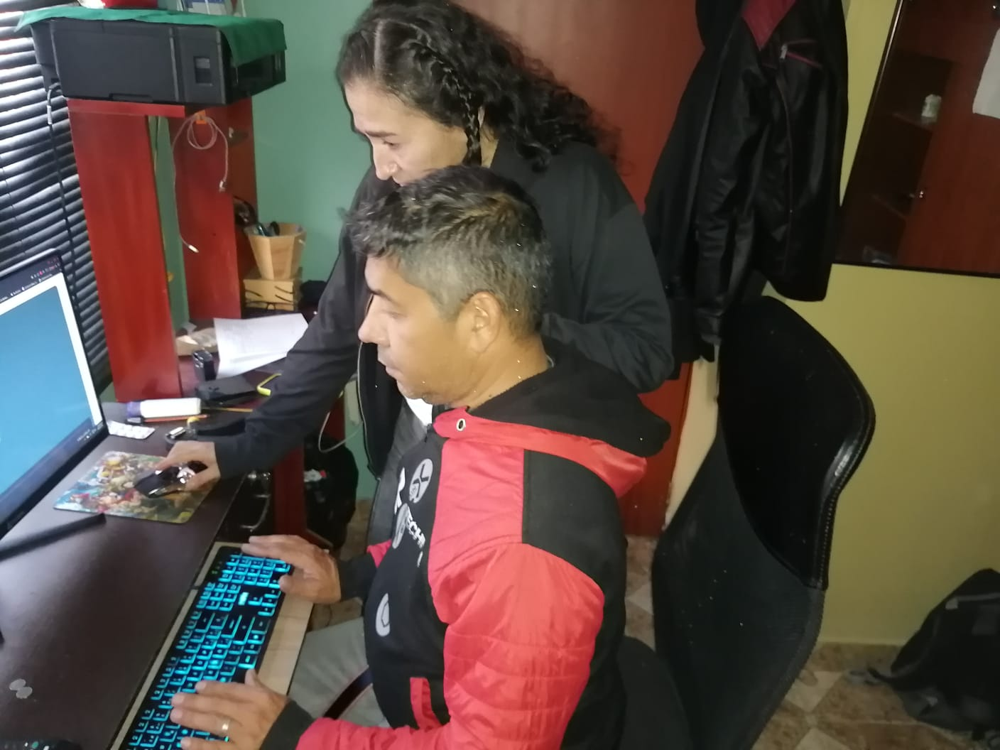
A continuacion se encuentran las evidencias de la practica
desarrollada el dia 13 de Agosto de 2025.
En esta practica antes de empezar con lo que tenia preparado, y
aprovechando que era la ultima practica, decide preguntarles si
querian aprende algo en especifico, despues de pensar unos segundo
dijeron que querian tener mas agilidad con el teclado, asi que decidi
retomar un poco el tema de la clase anterior y autilizar word y hacer
que escribieran un poco. Ya que tenian conocimeinto basico de como
usar Word decidi realizar algo asi como unos dictados de manera lenta
y pausada, no sin antes de explicarles la pocision adecuada para
escribir. En la imagen se muestran el señor Jose Arredondo Y la señora
Yolanda Vanegas examinando el teclado y buscando la pocision mas
comoda para los dedos
Aqui seguimos mirando la pocision correcta de los dedos, esta vez en el escritorio del computador, esto para que se acomoden bien antes de escribir.
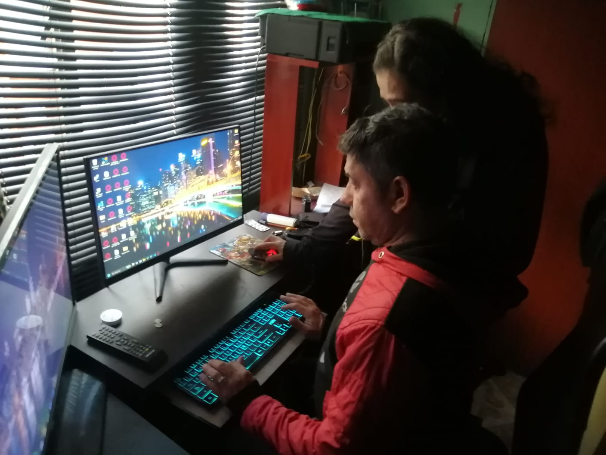despues de unos cuantos ejercisio, decidi dar un ejemplo de como escribia yo y la forma de la pocision de los dedos, ademas de mostrarles algunos textos para que se vayan guiando. En la imagen se muestran los dos señores, en la pantalla de la izquierda esta el word con los ejemplos de mis escritos, y en la derecha estan abriendo el correo para realizar la redaccion y envio de un correo electronico.
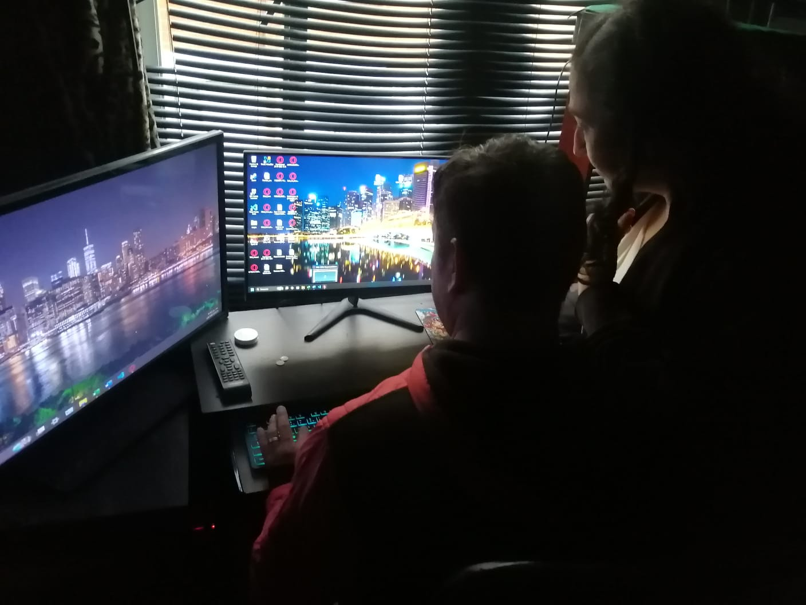 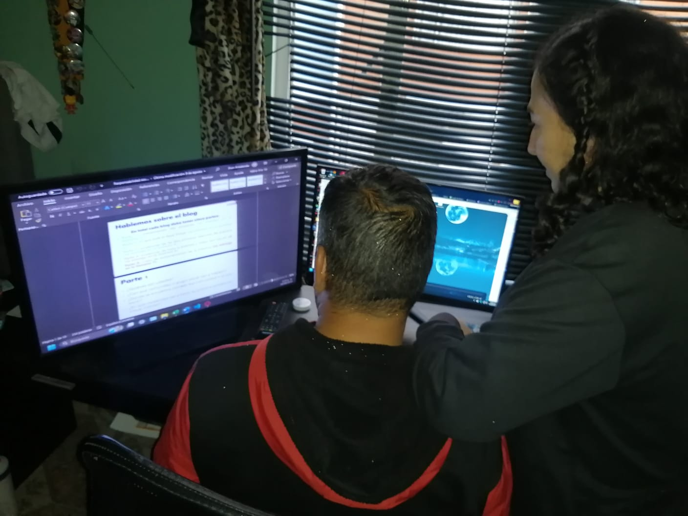En la imagen se ve al señor Jose en el escritorio del computador, preparandose a realizar la practica para evaluar los conocimientos adquiridos.
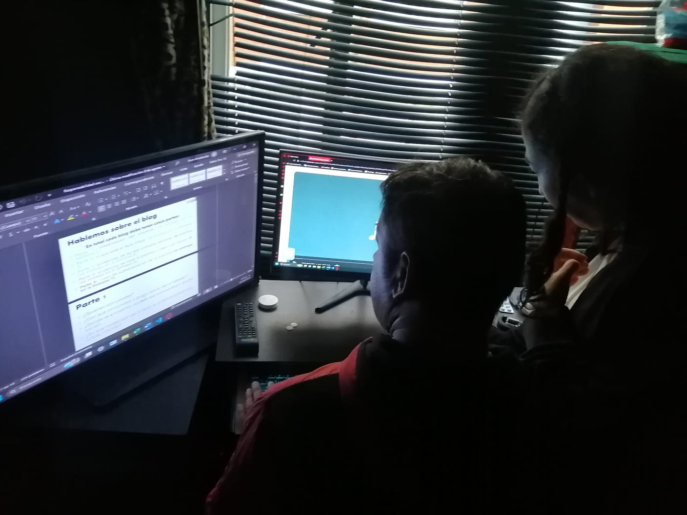 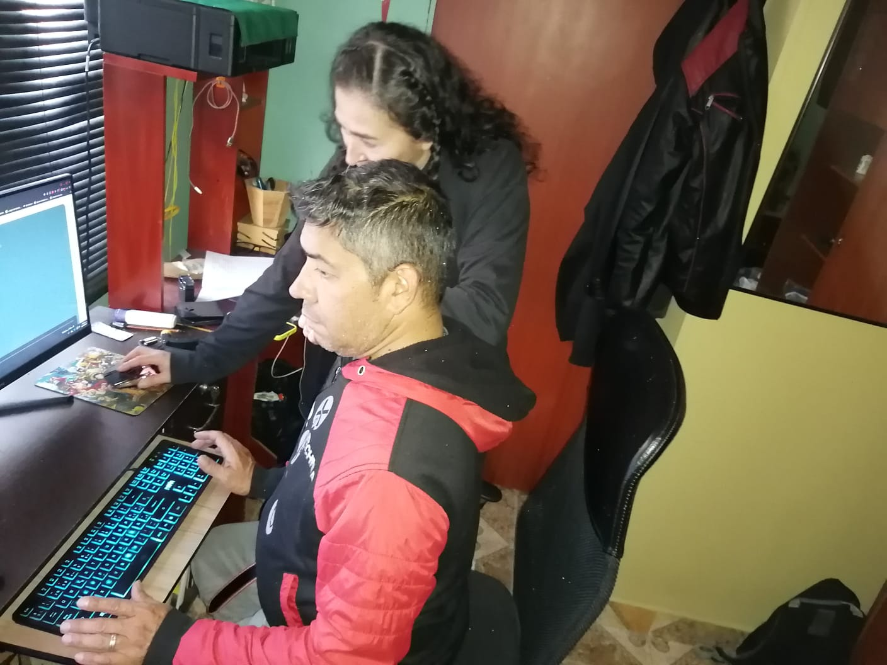 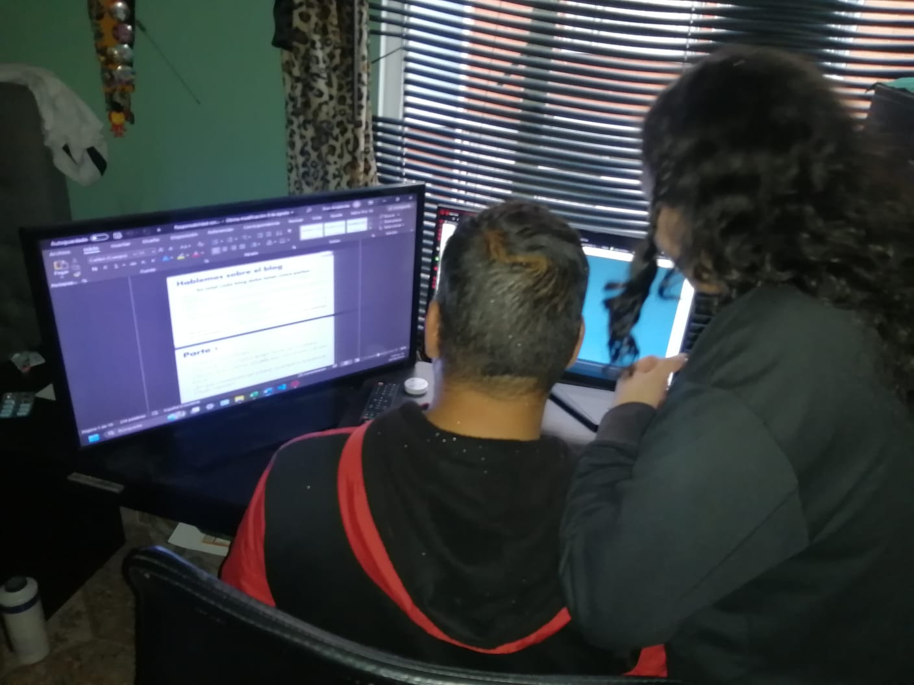Reflexion personal
Esta practica fue mirarme a mi en un pasado no muy lejano, donde me costaba escribir con rapidez en un teclado, donde me daba nervios enviar un correo y que escribiera mal o enviara algo que no debia, todos esos miedos se fueron a medida que mas me familiarizaba con los programas y el computador, todas esas cosas que sentia las vi reflejadas en los aprendices en esta practica. Fue una grata experiencia ver la evolucion que tuvieron ellos 2 en el transcurso de todas las actividades y el ayudarlos a dejar atras las dudas y lo nervios ademas de introducirlos en este mundo de tantas posibilidades como es la tecnologia. Ademas las palabras de agradecimiento que me dieron al terminar cada una de las actividades me hicieron sentir una sensacion de satisfaccion, y el pensar que muchas veces por no contar con el tiempo tanto por parte de ellos como por parte mia, de empezar este hermoso recorrido me entristece un poco, pero ahora despues de realizar esta practica estoy seguro que ellos encontran el tiempo para seguir aprendiendo y yo encontre el tiempo y los espacios para seguirles enseñando. Nos vamos con una agradable experiencia que no se acaba aqui si no que seguira por mucho tiempo mas.
Referencias
- Pacheco Duarte, J. F. & Archila Quiñones, S. (2020). Guía para construir teorías del cambio en programas y proyectos sociales desde los principios generales de El Minuto de Dios (pp. 11-28). Corporación Universitaria Minuto de Dios.
- Pacheco Duarte, J. F. et al. (2022). Ruta de Innovación Social: Paso a paso para desarrollar innovaciones sociales (Documento Técnico 02) (pp. 10-14). Corporación Universitaria Minuto de Dios.
- RataType.(s.f). Aprender a escribir en teclado online. RataType https://www.ratatype.com/es/learn
- Microsoft ExpertZone Spain. (2023, 8 de febrero). 33 Trucos de WORD en 7 MINUTOS Para Mejorar tu Productividad!. Youtube. https://www.youtube.com/watch?v=V5J7Us1EkVQ&t=48s
- interDidactica. (2021, 15 de septiembre).Lección 1: Cómo colocar los dedos en el teclado. Curso Gratis de Mecanografía. Youtube. https://www.youtube.com/watch?v=lcxkRC1kTvQ&t=112s